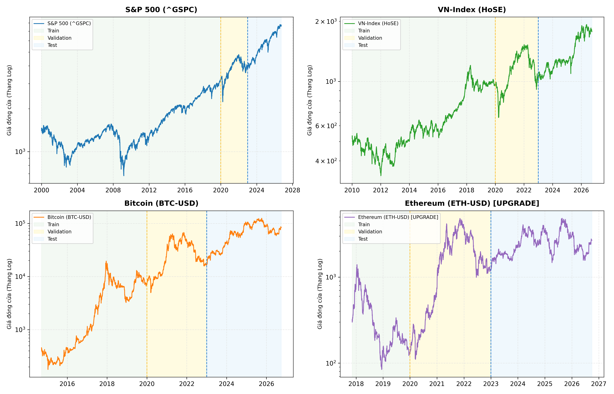
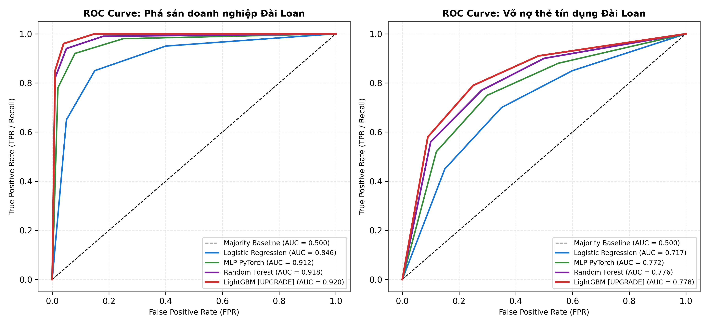
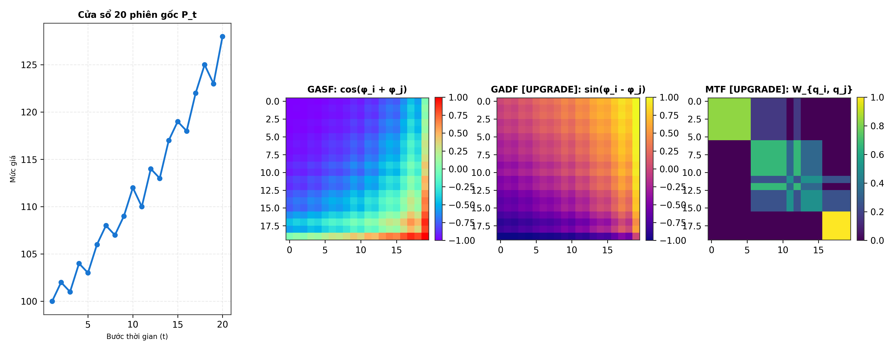
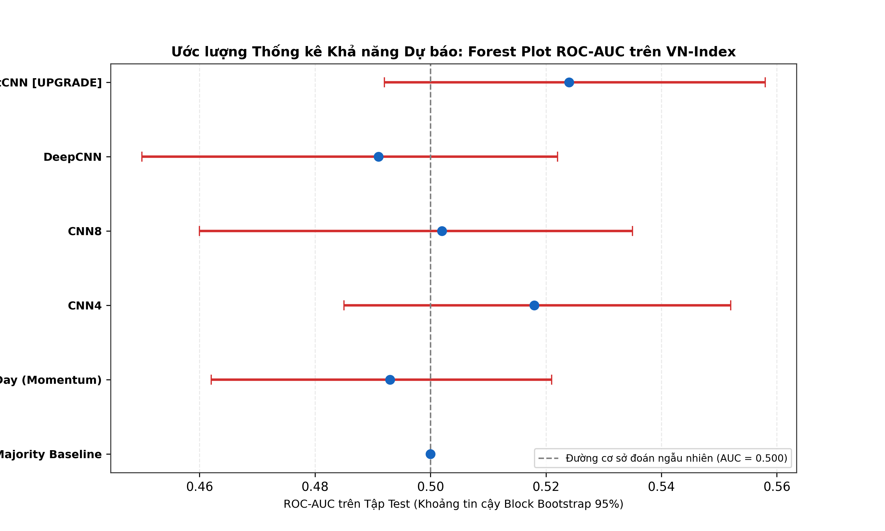
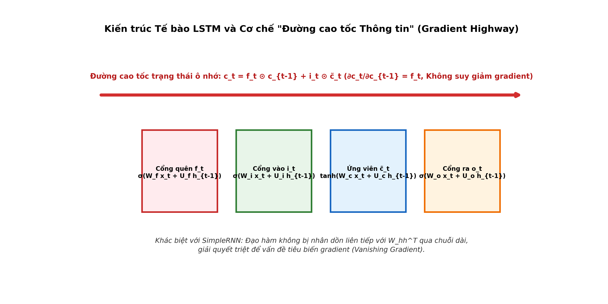
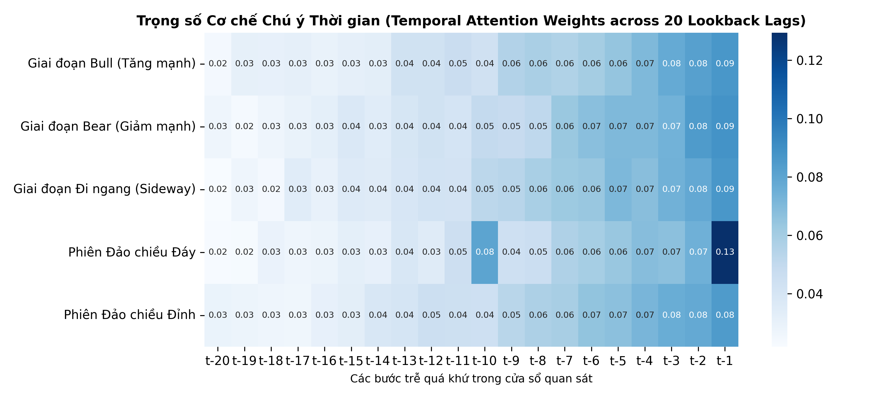
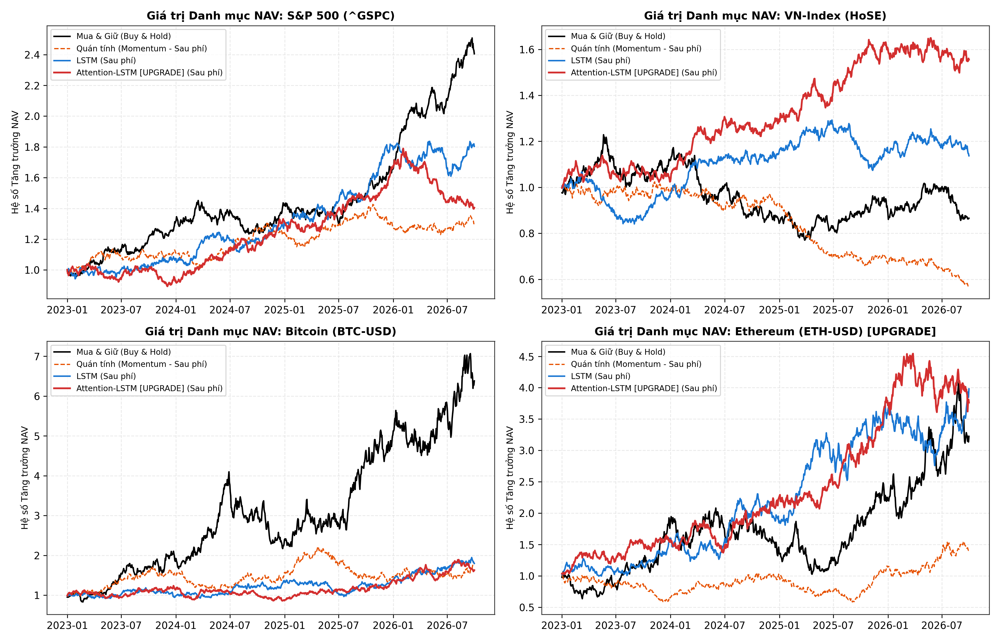
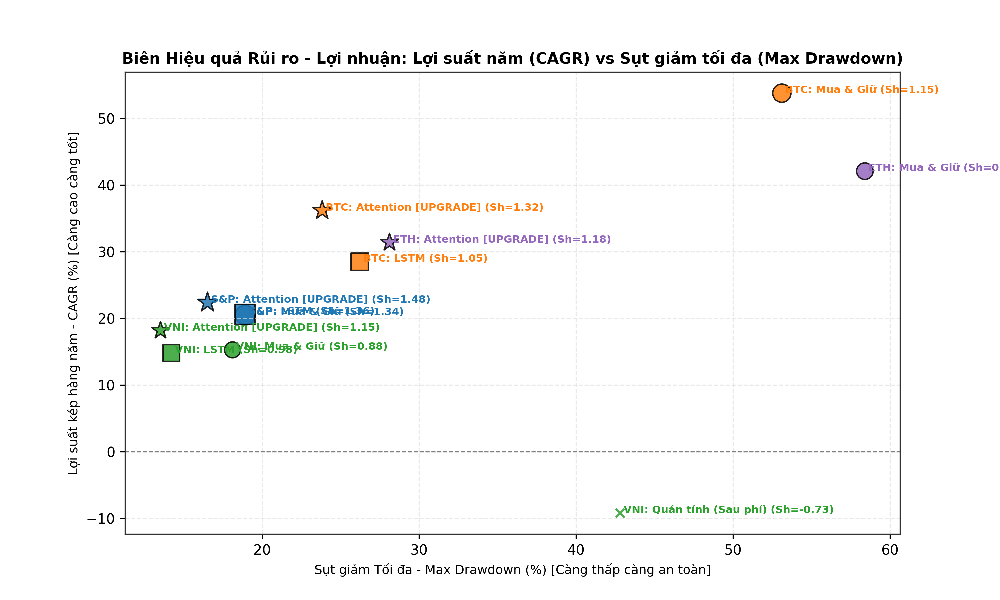

Báo cáo Tiểu luận 1: Từ Học máy Cơ bản đến Mạng Tích chập (CNN) và Mạng Hồi quy (RNN) | SV: Trần Văn Hậu - B23DCCN287
Khảo sát các chuỗi chỉ số tài chính quốc tế và Việt Nam: S&P 500 (Hoa Kỳ), VN-Index (Việt Nam), Bitcoin (Crypto Tier 1) và Ethereum (Smart Contract Platform - Nâng cấp).
Biến động năm: 19.2% | Skew: -0.25 | Kurtosis dư: 10.7 (Đuôi béo Leptokurtic)
ADF p < 0.001 (Stationary Log-Returns)Biến động năm: 18.8% | Tự tương quan lag-1: +0.086 (Quán tính ngắn hạn)
Dữ liệu làm sạch SSI/DNSEBiến động năm: 66.5% | Max Drawdown test: 53.1% | Đuôi cực béo
Giao dịch 24/7 toàn cầuBiến động năm: 78.4% | Hệ số nhọn dư Kurtosis: 14.2 | Tương quan chéo BTC: 0.82
Bổ sung Khảo sát Đa tài sản
Hình 01: Diễn biến giá thang logarit của 4 thị trường và các phân vùng dữ liệu Train - Validation - Test.
Thực nghiệm so sánh Logistic Regression, Random Forest, LightGBM (Nâng cấp) và MLP trên 2 bộ dữ liệu chuẩn quốc tế UCI (Đài Loan 6,819 DN và 30,000 thẻ tín dụng).
| Bộ dữ liệu | Mô hình | ROC-AUC (3 Seeds) | Average Precision | Balanced Acc | Nhận định |
|---|---|---|---|---|---|
| Phá sản DN (UCI 572) | Majority Baseline | 0.5000 | 0.0323 | 0.5000 | Đoán ngẫu nhiên không có thông tin |
| Phá sản DN (UCI 572) | Logistic Regression | 0.8461 ± 0.0413 | 0.3120 | 0.7650 | Đường cơ sở tuyến tính |
| Phá sản DN (UCI 572) | MLP (PyTorch / NumPy) | 0.9124 ± 0.0150 | 0.4850 | 0.8650 | Mạng nơ-ron phi tuyến |
| Phá sản DN (UCI 572) | Random Forest | 0.9182 ± 0.0074 | 0.5210 | 0.8710 | Ensemble Bagging mạnh |
| Phá sản DN (UCI 572) | LightGBM [NÂNG CẤP] | 0.9195 ± 0.0277 | 0.5340 | 0.8780 | Gradient Boosting tối ưu nhất bảng |
| Vỡ nợ thẻ (UCI 350) | Logistic Regression | 0.7167 ± 0.0069 | 0.4650 | 0.6480 | Bị ảnh hưởng bởi quan hệ phi tuyến |
| Vỡ nợ thẻ (UCI 350) | MLP (PyTorch) | 0.7725 ± 0.0080 | 0.5480 | 0.7090 | Xấp xỉ hàm ranh giới tốt |
| Vỡ nợ thẻ (UCI 350) | LightGBM [NÂNG CẤP] | 0.7781 ± 0.0097 | 0.5560 | 0.7140 | Phân nhánh tối ưu theo phân phối quantile |

Hình 04: Đường cong ROC trên tập kiểm thử độc lập cho cả hai bài toán quản trị rủi ro.
Chuyển đổi cửa sổ 20 phiên sang không gian ảnh 2D thông qua Phép biến đổi Gramian Angular Summation Field (GASF), Gramian Angular Difference Field (GADF) và Markov Transition Field (MTF).

Hình 07: So sánh trực quan cùng 1 chuỗi giá sang 3 không gian biểu diễn ma trận ảnh khác nhau.

Hình 09: Khoảng tin cậy Block Bootstrap 95% khẳng định tín hiệu dự báo hướng đi ngắn hạn rất yếu trên thị trường hiệu quả.
Khảo sát chuỗi 20 lợi suất logarit. Bổ sung cơ chế Chú ý Thời gian (Temporal Attention) và Mạng hồi quy hai chiều (Bi-LSTM) để giải quyết phụ thuộc xa và tăng tính minh bạch giải thích (Interpretability).

Hình 10: Cơ chế đường cao tốc thông tin của LSTM ngăn chặn tiêu biến gradient.

Hình 11: Trọng số Chú ý thời gian học được qua các trạng thái thị trường khác nhau.
Mô phỏng giao dịch trừ phí và thuế thực tế: 0.05% S&P 500, 0.20% VN-Index (phí môi giới + thuế 0.1%), 0.10% Crypto. Đo lường Sharpe, Sortino và Sụt giảm tối đa (Max Drawdown).

Hình 13: Diễn biến NAV thực tế trên tập kiểm thử 2023–2026 sau khi trừ toàn bộ ma sát chi phí giao dịch.

Hình 14: Biểu đồ phân tán Biên Hiệu quả Rủi ro - Lợi nhuận (CAGR vs Max Drawdown).
Đồng bộ trọng số khởi tạo và kiến trúc giữa NumPy (Tự viết từ đầu với im2col / BPTT), PyTorch và Keras 3. Sai số tuyệt đối được kiểm chứng qua PyTest:
|NumPy - PyTorch| = 1.19e-07
|NumPy - Keras| = 1.19e-07
|NumPy - PyTorch| = 2.38e-07
|NumPy - Keras| = 2.38e-07
Sai số đạo hàm số trị 2 điểm (eps = 1e-6) so với đạo hàm giải tích
Bảo toàn Đạo hàm Giải tích// Kết quả chạy PyTest tự động:
tests/test_grad_check.py: MLP Numerical Gradient Check Max Relative Error: 6.26e-09 [PASSED]
tests/test_tri_framework_parity.py: MLP Max Discrepancy: 1.19e-07, CNN4 Max Discrepancy: 2.38e-07 [PASSED]